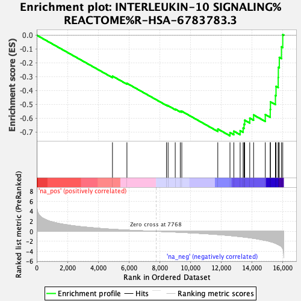
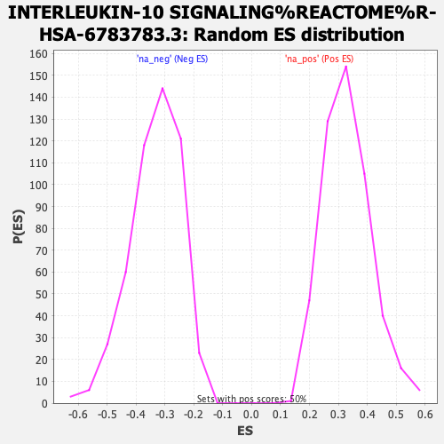

| | | Dataset | rankings |
| Phenotype | NoPhenotypeAvailable |
| Upregulated in class | na_neg |
| GeneSet | INTERLEUKIN-10 SIGNALING%REACTOME%R-HSA-6783783.3 |
| Enrichment Score (ES) | -0.72742087 |
| Normalized Enrichment Score (NES) | -2.1828136 |
| Nominal p-value | 0.0 |
| FDR q-value | 3.9937455E-4 |
| FWER p-Value | 0.006 |
Table: GSEA Results Summary

Fig 1: Enrichment plot: INTERLEUKIN-10 SIGNALING%REACTOME%R-HSA-6783783.3
Profile of the Running ES Score & Positions of GeneSet Members on the Rank Ordered List
| PROBE | GENE SYMBOL | GENE_TITLE | RANK IN GENE LIST | RANK METRIC SCORE | RUNNING ES | CORE ENRICHMENT | | 1 | IL18 | | | 4927 | 0.406 | -0.2959 | No |
| 2 | TNFRSF1A | | | 5868 | 0.241 | -0.3479 | No |
| 3 | JAK1 | | | 8442 | -0.077 | -0.5061 | No |
| 4 | TYK2 | | | 8544 | -0.092 | -0.5099 | No |
| 5 | IL10RB | | | 9009 | -0.151 | -0.5346 | No |
| 6 | STAT3 | | | 9337 | -0.195 | -0.5496 | No |
| 7 | TIMP1 | | | 9435 | -0.210 | -0.5499 | No |
| 8 | CSF1 | | | 11777 | -0.644 | -0.6781 | No |
| 9 | IL10RA | | | 12569 | -0.855 | -0.7040 | Yes |
| 10 | IL1R1 | | | 12821 | -0.928 | -0.6941 | Yes |
| 11 | LIF | | | 13230 | -1.061 | -0.6904 | Yes |
| 12 | CSF3 | | | 13425 | -1.129 | -0.6716 | Yes |
| 13 | TNFRSF1B | | | 13486 | -1.147 | -0.6438 | Yes |
| 14 | CCR2 | | | 13527 | -1.158 | -0.6145 | Yes |
| 15 | CCR1 | | | 13855 | -1.289 | -0.5995 | Yes |
| 16 | CD86 | | | 14106 | -1.405 | -0.5765 | Yes |
| 17 | PTAFR | | | 14865 | -1.820 | -0.5738 | Yes |
| 18 | ICAM1 | | | 15187 | -2.050 | -0.5376 | Yes |
| 19 | PTGS2 | | | 15202 | -2.070 | -0.4816 | Yes |
| 20 | CXCL10 | | | 15526 | -2.415 | -0.4355 | Yes |
| 21 | CCL2 | | | 15565 | -2.463 | -0.3703 | Yes |
| 22 | FPR1 | | | 15706 | -2.663 | -0.3059 | Yes |
| 23 | CCL5 | | | 15715 | -2.678 | -0.2329 | Yes |
| 24 | IL1B | | | 15778 | -2.784 | -0.1604 | Yes |
| 25 | CXCL2 | | | 15918 | -3.084 | -0.0844 | Yes |
| 26 | IL6 | | | 16002 | -3.423 | 0.0044 | Yes |
Table: GSEA details [plain text format]

Fig 2: INTERLEUKIN-10 SIGNALING%REACTOME%R-HSA-6783783.3: Random ES distribution
Gene set null distribution of ES for INTERLEUKIN-10 SIGNALING%REACTOME%R-HSA-6783783.3